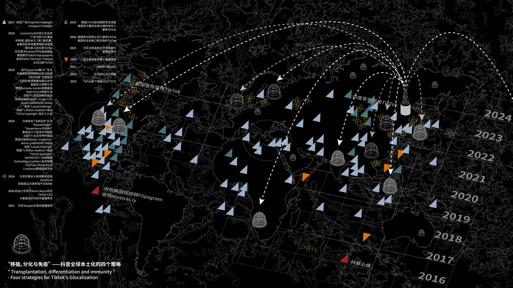

Transplantation, Differentiation & Immunity: Four Strategies for Douyin’s Glocalization
A visual study of Douyin, media participation, and the relationship between global platforms and local cultures.

Global platforms, local experiences
This project examines Douyin through media theory and design: how participation, interface decisions, and localized content shape the experience of a digital platform.
Making relationships visible
The visual presentation connects platform strategies with cultural contexts and modes of participation. It brings research into a graphic format for examining the tensions between global circulation and local experience.
In the context of globalization, this project examines how Douyin’s design strategies support localization. Interface design, recommendation systems, local challenges, and trends are considered as ways of connecting users with content relevant to their languages, regions, and interests.
Design also shapes accessibility and participation. Attention to cultural contexts and social practices offers a way to understand the varied communities that encounter a global platform, and how their experiences may be localized.
Through a media-theory lens, the project explores emotional expression, user-generated content, and interaction in short-form video. It considers how these forms of participation expand communication and cross-cultural exchange.